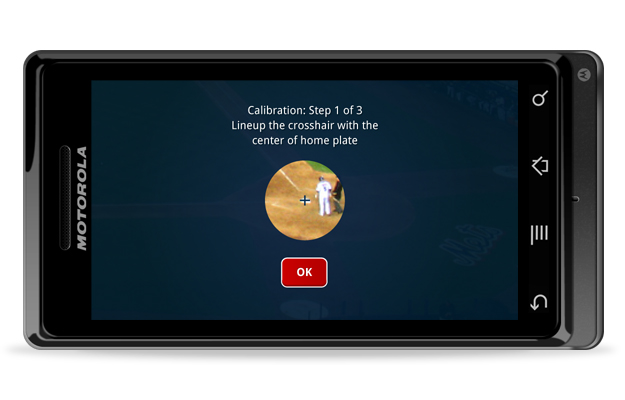

Client
Internal Mint Project
Role
Concept development, Android UI Design
Overview
Baseball Matchup leverages data from previous pitcher & batter matchups to show the locations of hits, live on the field, using augmented reality. Gain insight into why the outfield changes position as the next player steps up. Notice gaps the fielders haven’t spotted. Understand why certain batters struggle against particular pitchers.
URLs
The Android Challenge
Mint: The making of Baseball Matchup
PSFK: Insights Captured Via Mobile App During Live Sporting Events